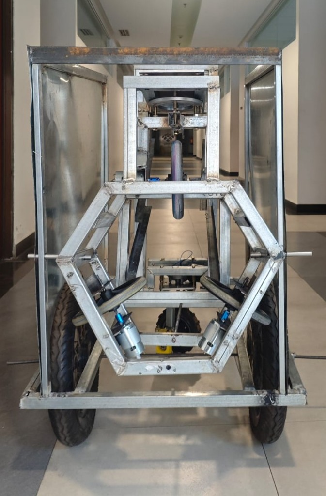

Akbar Darma
Saputra
Akbar
Darma Saputra
Sarjana Terapan (D4) Teknik Mekatronika PENS (IPK 3,41). Menjembatani rekayasa mekanikal, elektrikal, dan antarmuka HMI dengan sistem kendali terdistribusi: dari perancangan Robot Pelatih Kiper skala penuh, commissioning panel Schneider AS-P di Menara BNI PIK2, hingga penyusunan 26 lembar gambar kerja manufaktur ISO untuk Desktop CNC Router.
Lulusan Sarjana Terapan (D4) Teknik Mekatronika dari Politeknik Elektronika Negeri Surabaya (PENS) dengan kompetensi terintegrasi di bidang otomasi industri, Building Management System (BMS), sistem embedded (dual-ESP32, firmware C/C++), desain mekanikal parametrik (Autodesk Inventor), serta perancangan PCB kustom (KiCad/Eagle).
Memiliki pengalaman langsung dalam proses commissioning panel Schneider Electric AS-P di Menara BNI PIK2, serta rekam jejak kepemimpinan riset sebagai Ketua Departemen RTSM HIMA MEKA PENS (2024–2025). Kesiapan kerja di lapangan didukung pemahaman standar ISO (9001, 14001, 45001, 31000) dan prosedur keselamatan kerja K3 LOTO.
Galeri Karya Rekayasa
Dokumentasi teknis tiga proyek terintegrasi: sistem robotika skala penuh, gambar kerja manufaktur ISO, komisioning BMS gedung bertingkat, serta sertifikasi kepatuhan industri.

Mencari engineer mekatronika, otomasi industri, atau desain CAD?
Mari berdiskusi.
Terbuka untuk posisi rekayasa penuh waktu (full-time), proyek integrasi & commissioning otomasi industri (PLC, SCADA, BMS), perancangan mekanikal CAD siap fabrikasi, serta pengembangan sistem robotika. Silakan hubungi saya melalui email, WhatsApp, atau unduh CV lengkap saya di bawah ini.